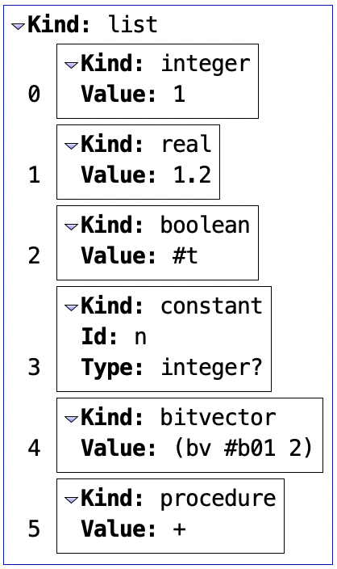
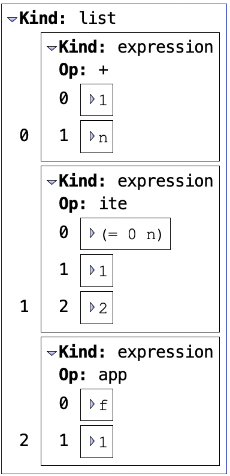
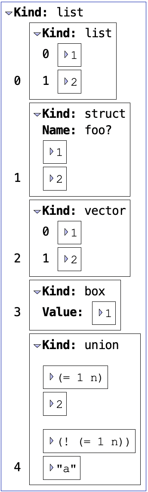
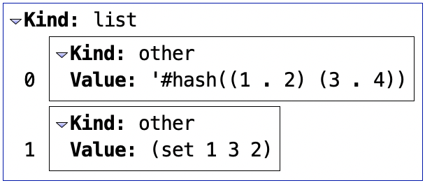
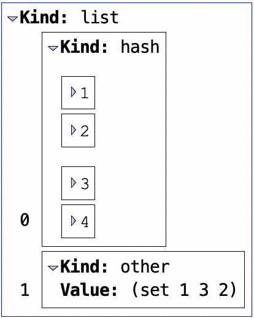

6.3 Utility Libraries
The following utility libraries facilitate the development of solver-aided programs.
6.3.1 Value Destructuring Library
| (require rosette/lib/destruct) | package: rosette |
syntax
(destruct val-expr [pat body ...+] ...)
A sub-pattern is restricted to an identifier, a wildcard (_), or an ellipsis (e.g., ...). That is, destruct allows value destructuring only at the outermost level (nested destructuring is disallowed).
All binding identifiers in a clause must be unique (no duplicate binding identifiers).
Only patterns with lifted semantics are supported. See the grammar below for full details.
Side-conditioning via #:when and the failure procedure are not supported.
> (struct add (x y)) > (struct mul (x y))
> (define (interp v) (destruct v [(add x y) (+ x y)] [(mul x y) (* x y)] [_ (assert #f "infeasible")])) > (interp (add 3 4)) 7
> (interp (mul 5 6)) 30
> (define-symbolic b boolean?) > (interp (if b (add 3 4) (mul 5 6))) (ite b 7 30)
The grammar of pat is as follows, where non-italicized identifiers are recognized literally (i.e., not by binding).
pat |
| ::= |
| sp |
| match anything; see details below |
|
| | |
| (list lvp ...) |
| match a list |
|
| | |
| (list-rest lvp ... sp) |
| match a list with tail |
|
| | |
| (list* lvp ... sp) |
| match a list with tail |
|
| | |
| (vector lvp ...) |
| match a vector |
|
| | |
| (cons sp sp) |
| match a pair |
|
| | |
| (box sp) |
| match a box |
|
| | |
| (struct-id sp ...) |
| match a struct-id instance |
sp |
| ::= |
| id |
| match anything, bind identifier |
|
| | |
| _ |
| match anything, ignore the result |
lvp |
| ::= |
| sp ooo |
| greedily match anything |
|
| | |
| sp |
| match anything |
ooo |
| ::= |
| ... |
| zero or more; ... is literal |
|
| | |
| ___ |
| zero or more |
|
| | |
| ..k |
| k or more |
|
| | |
| __k |
| k or more |
See match for the semantics of each pattern.
syntax
(destruct* (val-expr ...) [(pat ...) body ...+] ...)
> (define x (if b (list 1) (list 1 2))) > (define y (if b (list 10) (list 10 20)))
> (destruct* (x y) [((list p) (list q)) (+ p q)] [((list p p*) (list q q*)) (+ p p* q q*)]) (ite b 11 33)
syntax
(destruct-lambda [(pat ...) body ...+] ...)
> (map (destruct-lambda [(add x y) (+ x y)]) (list (if b (add 1 2) (add 3 4)) (add 5 6) (if (not b) (add 7 8) (add 9 10)))) (list (ite b 3 7) 11 (ite b 19 15))
6.3.2 Value Browser Library
| (require rosette/lib/value-browser) | package: rosette |
Rosette programs often generate complex symbolic values that can be difficult to read and debug. One common problem is that the printer truncates their representation when it exceeds the threshold set by (error-print-width). This library provides an interactive value browser to help programmers navigate and read complex symbolic values.
procedure
(render-value/snip val [#:handler handler]) → (is-a?/c snip%)
val : any/c
handler : (-> any/c (-> any/c (is-a?/c snip%)) layout) = (λ (value rec) #f)
The value browser supports displaying and navigating values of lifted datatypes. Values of other types (e.g., string or hash) are displayed as leaves in the navigation tree, labeled with the kind other. The optional argument handler can be supplied to customize the display of other values and recover the ability to navigate their structure. See layout and the examples below for more details.
procedure
(render-value/window val [#:handler handler]) → (is-a?/c snip%)
val : any/c
handler : (-> any/c (-> any/c (is-a?/c snip%)) layout) = (λ (value rec) #f)
6.3.2.1 Layout
A layout is an embedded DSL describing the tabular layout to display a value of an unlifted datatype in the value browser. It has the following grammar:
| ‹layout› | ::= | #f | a list of ‹row›s |
| ‹row› | ::= | '#:gap | a list of ‹col›s |
| ‹col› | ::= | a snip% | ‹string› | '(emph ‹string› ) |
| ‹string› | ::= | a string |
Here, #f means the value is atomic (and will be categorized under the kind other), '#:gap means a vertical gap, and emph means emphasis.
6.3.2.2 Examples
The value browser helps navigate values of lifted datatypes as shown below.
> (define-symbolic n integer?) > (render-value/snip (list 1 1.2 #t n (bv 1 (bitvector 2)) +)) ; After expanding the snip:  > (define-symbolic f (~> integer? integer?)) > (render-value/snip (list (+ n 1) (if (= n 0) 1 2) (f 1)))  > (struct foo [a b]) > (render-value/snip (list (list 1 2) (foo 1 2) (vector 1 2) (box 1) (if (= n 1) 2 "a"))) 
But when we try to display an unlifted value like a hash or a set, the browser categorizes it with the kind other, with navigation disabled.
> (render-value/snip (list (hash 1 2 3 4) (set 1 2 3))) 
To allow hash navigation, supply a handler that returns a desired layout when a hash is passed in (as the first argument). For instance, we might want (hash a b c d) to have the following layout:
`([(emph "Kind: ") "hash"] #:gap [,snip-a] [,snip-b] #:gap [,snip-c] [,snip-d])
In this layout, snip-a, snip-b, snip-c, and snip-d can be obtained by applying the recursive renderer to a, b, c, and d respectively.
Using the above layout, we enable hash navigation as follows:
> (render-value/snip (list (hash 1 2 3 4) (set 1 2 3)) #:handler (λ (value rec) (cond [(hash? value) (append* '([(emph "Kind: ") "hash"]) (for/list ([(k v) (in-hash value)]) `(#:gap [,(rec k)] [,(rec v)])))] [else #f]))) 
Note that you should use the recursive renderer (provided as the second argument) rather than calling render-value/snip directly so that the correct handler is used when rendering sub-value (e.g., a hash of hashes).